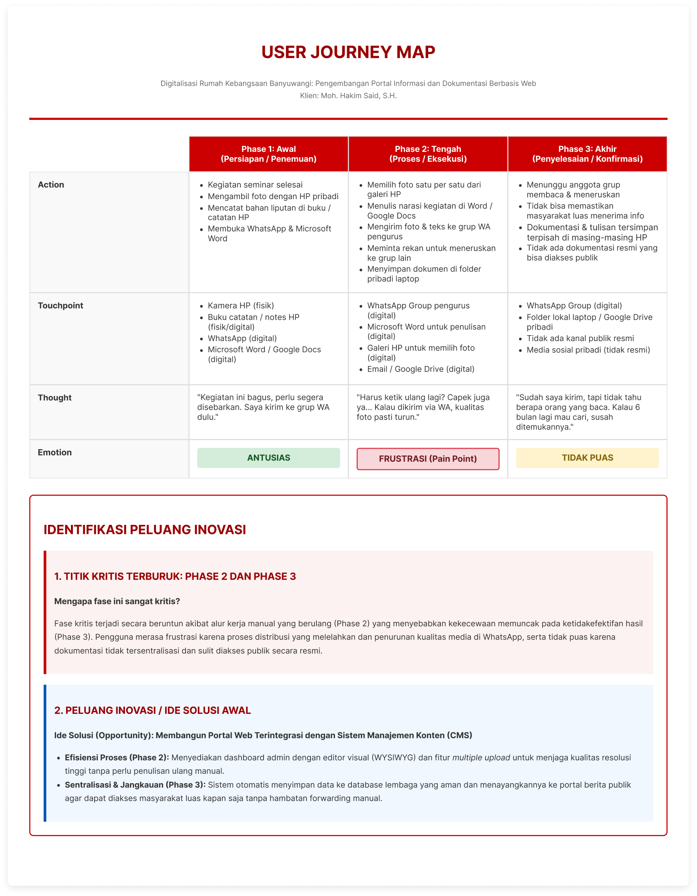
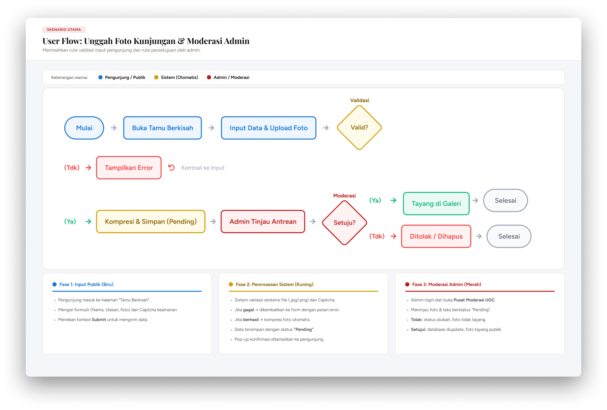
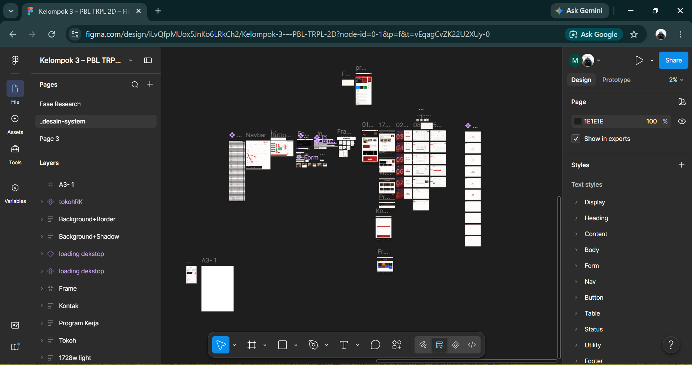
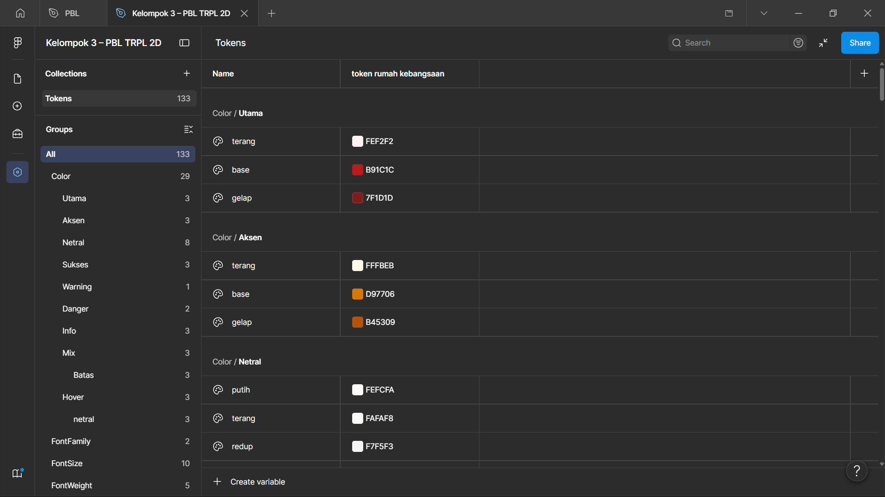
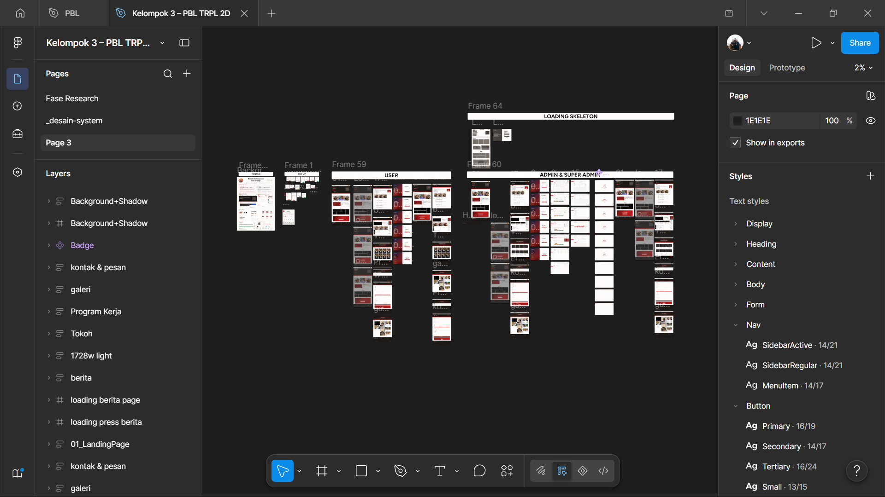

Studi Kasus · Desain UI/UX
Sistem Digitalisasi Rumah Kebangsaan Banyuwangi
Case study proses desain UI/UX — dari wireframe kasar hingga tampilan akhir — untuk portal informasi & dokumentasi berbasis web, dikerjakan bersama Tim Javas Navasena (Kelompok 3, PBL TRPL 2D).
Figma
Wireframing
UI/UX Design
Prototyping
Coba Prototype di Figma
01
Research
Riset awal untuk memahami kebutuhan pengguna, referensi kompetitor, dan alur informasi sebelum masuk ke desain.


02
Design System
Fondasi visual — palet warna, tipografi, komponen, dan pola UI — yang dipakai konsisten di seluruh halaman.



03
Desain Final
Hasil akhir setelah design system diterapkan ke seluruh halaman, siap untuk implementasi.
